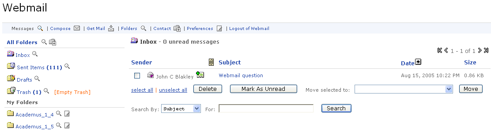

The Webmail Channel acts as an e-mail client in combination with a back-end e-mail IMAP/server. The channel gives the user access to view, store, and compose e-mail messages. The system will require you to login to the system using your User Name and Password, if single sign on capabilities have not been enabled by your institution.
Once you have been authenticated into the e-mail system, you will be given the following 6 options:
- View Messages
- Compose Mail
- Check for Mail
- Access Folders
- Add a Contact
- Modify Preferences
